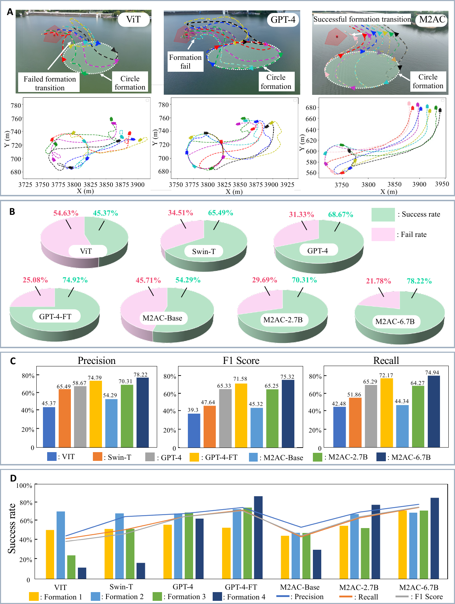
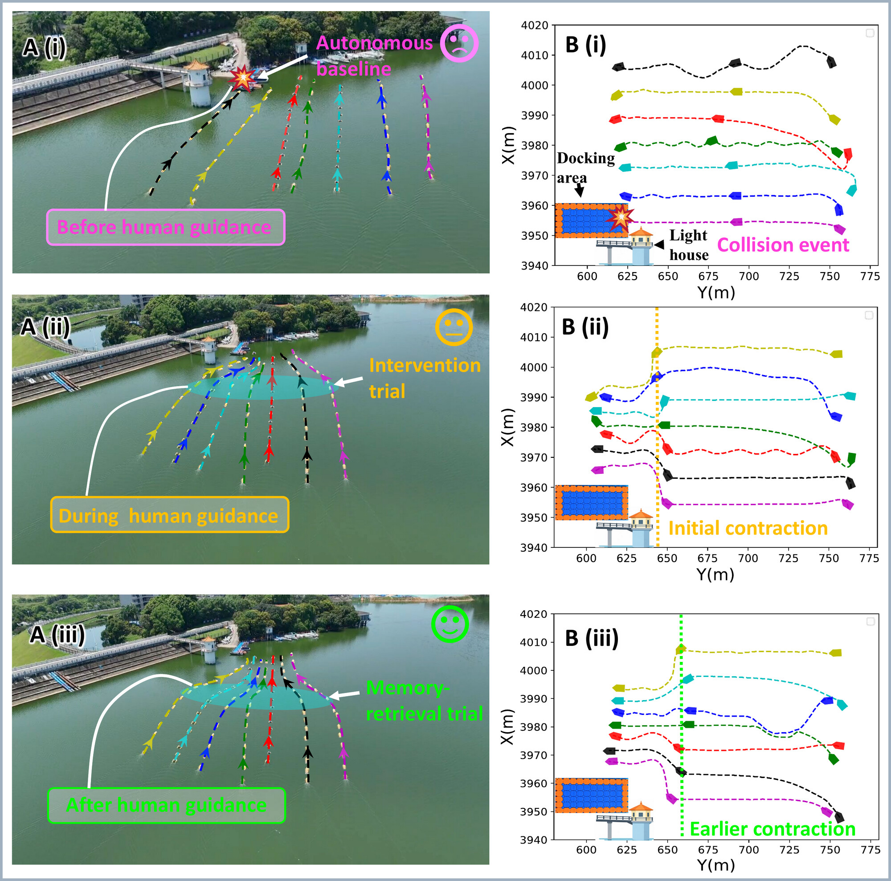

# Video
# Overview
- Real-world lake experiments with up to seven heterogeneous USVs
- Reactive formation switching when encountering unexpected obstacles
- Zero-shot field demonstration in a previously unseen lake
- In-mission recovery from perceptual failure through brief human guidance, with the correction reused later
- Coordinated traversal of narrow passages
7heterogeneous USVs in field trials
78.2%formation-decision success rate (best)
75.3%F1 score (best)
# Results


# Dataset
We release a self-built water-surface scene dataset of around 18k images spanning four scene categories. Training images were collected at Songshan Lake, while test images come from diverse open-source water-surface scenes (rivers, streams, harbors) to probe generalization beyond the training lake.
| Scene category | Train | Test |
|---|---|---|
| Open waters | 5,052 | 430 |
| Open target | 3,552 | 344 |
| Constrained passage | 4,706 | 405 |
| Constrained target | 3,499 | 377 |
| Total | 16,809 | 1,556 |
Field-trial logs (multi-USV rosbags) from the lake experiments — formation switching, unseen-lake transfer, guidance and reuse, and narrow-passage traversal — are included in the download alongside the image dataset.
Download from Baidu Netdisk (百度网盘) · access code / 提取码: my2c# Citation
If you find our work useful, please cite:
@article{m2ac2026,
title = {Language-Mediated Multimodal Reasoning for Agile Coordination
of Uncrewed Surface Vehicle Swarms},
author = {Hu, Bin-Bin and Li, Jialuo and Hu, Yifan and Liu, Bin and
Li, Zhiquan and Jiang, Weiming and Shi, Ran and Zhou, Jiayu and
Yuan, Bowen and Wang, Rui and Zhou, Yuang and Dai, Dongyi and
Huang, Wenjun and Zhang, Yunfei and Gao, Fei and Zhang, Hai-Tao},
year = {2026},
note = {Preprint}
}